Welcome to RuFaS#
- Welcome to RuFaS
Introduction to RuFaS for New Team Members
2025-06-20

Onboarding Document v.2
The Modules of RuFaS#
This section is not required for installing software or working with the RuFaS model specifically, but instead provides a general overview of the capabilities of RuFaS and expected outputs of each module.
{kind=link}
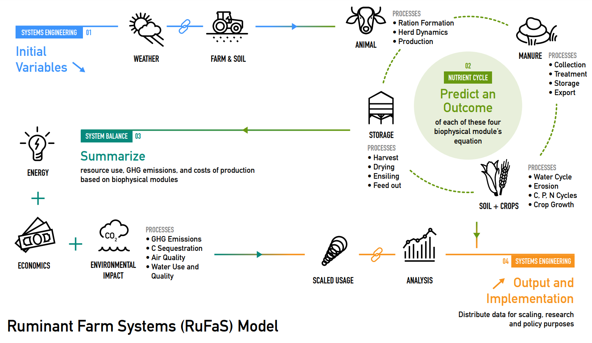
Animal Module - is in charge of simulating individual animal’s daily activities within the herd. In order to sufficiently simulate a herd, there are many inputs in the animal module covering herd performance and management.The module covers the lifecycle classes of a dairy bovine:
Birth and weaning (or selling surplus animals)
Growing and breeding heifers
Calving
Breeding
Drying off
Herd exits
{kind=link}
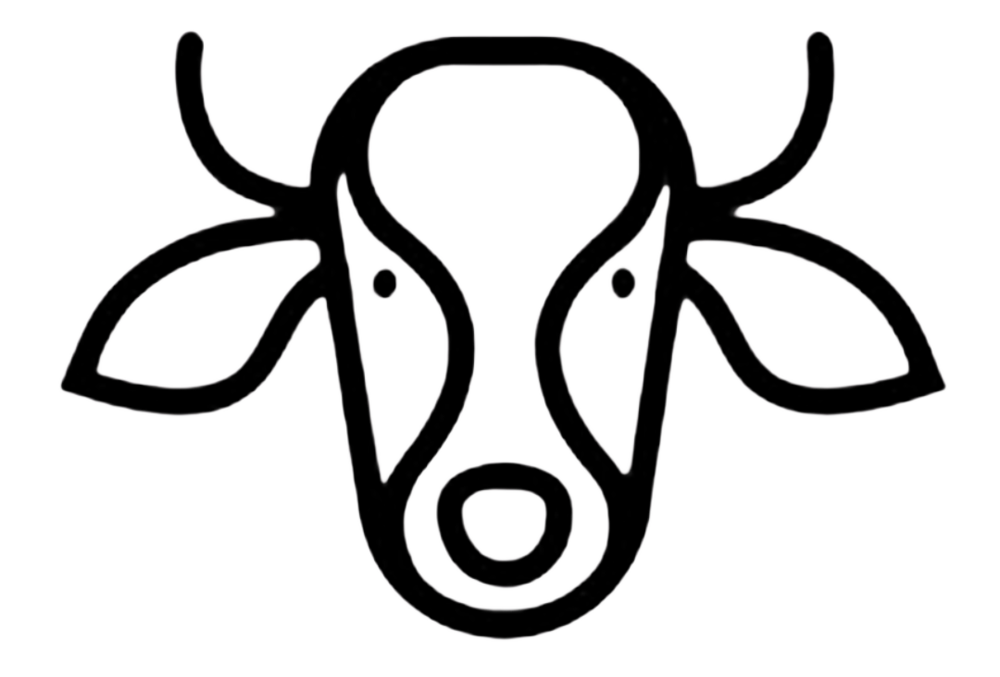
Remember, while overarching decisions about whether you’d like to provide the diet recipe or have RuFaS formulate one for you and whether or not you’d like to incorporate a feed additive will be included will be included in the animal module, most ration-related inputs and functions are controlled by the Feed Storage Module. And though it is linked to the Manure Module, it is responsible for the initial generation of manure and the associated emissions.
Primary outputs of the module as they relate to production and environment include milk yields, demographics of herds, dry matter intakes and feed efficiency, enteric methane emissions, feed or manure emissions, and manure housing emissions.
Manure Module - after the animal module has modeled animal excretion, the manure passes to the manure module where it is removed from the housing area by a manure handler, digested and / or separated, if appropriate, and stored. Each pen in the animal module must be linked to a manure management scenario, and these manure scenarios can be repeated across pens or uniquely defined for each pen. Scenario inputs include the following.
Bedding: type, quantity, and nutrient content
Handler: type, water usage, frequency
Separation: type, separation efficiency
Anaerobic digestion
Storage: length of time, cover/crust/cap and flare on liquid manure storage
{kind=link}
The output of this module estimates manure composition, quantity of manure, storage emissions, biogas capture from anaerobic digestion, and avoided ammonium emissions..
Feed Storage Module - is flexible for users that may choose to provide their own ration or have RuFaS build and feed a ration optimized for least-cost, RuFaS needs a set of ingredients to work from. The RuFaS feed library should be consulted for the full list of ingredients and ingredients that are in both the NASEM and NRC libraries can be used. If a user opts to define their own ration, they will input all items on a dry matter basis (as applicable) for each animal class (pre-weaned calves, growing heifers, close-up, and lactating cows) including:
Forages
Concentrates
Minerals
Feed cost
Milk reduction maximum and tolerance
{kind=link}
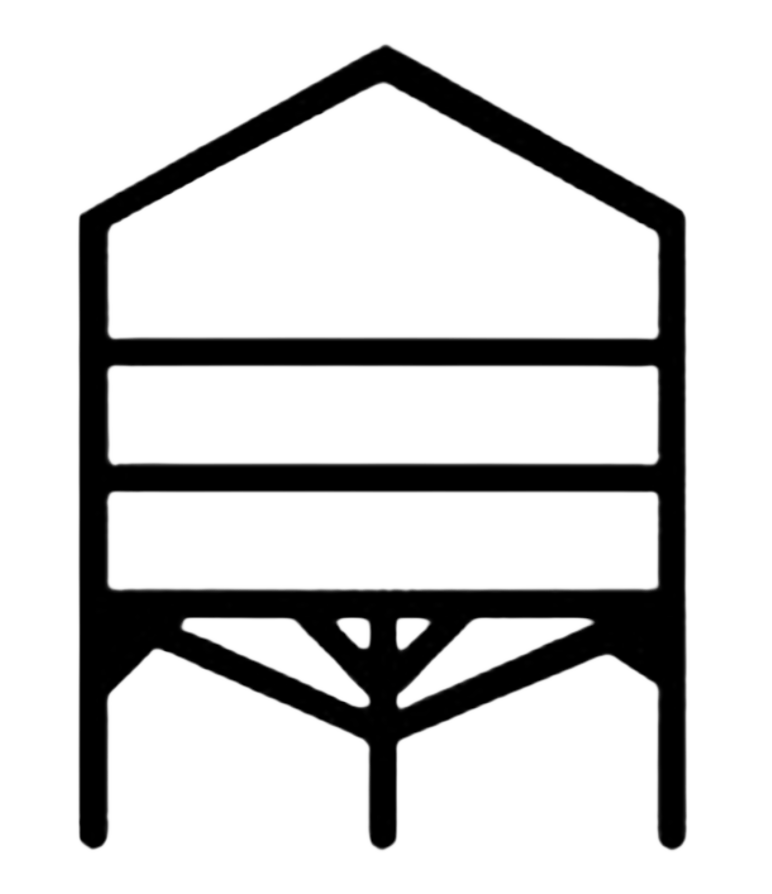
Outputs of interest for this module will consider production and environmental impacts.
Soil and Crop Module - simulates the daily changes in soil composition and crop growth based on nutrient availability, weather and soil types. A user provides information like the application of manure or synthetic fertilizer, tillage, planting and harvesting. Based on SWAT, Daycent, and SurPhos, RuFaS models the nitrogen cycle (denitrification and nitrification), soil water infiltration, percolation, and saturation leading to runoff, the phosphorus cycle and the carbon cycle. The Soil and Crop module is connected to the Manure module and the Feed Storage module to request farm generated manure application or manage inventories of the harvested crops and provide feed to the herd based on availability.
{kind=link}
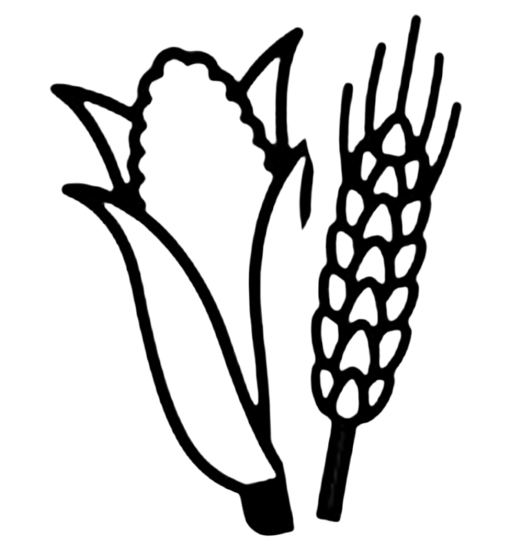
Outputs are estimated crop measures like biomass accumulation or harvest yields and field parameters like emissions, soil erosion, phosphorus runoff and nitrate percolation.
{kind=link}
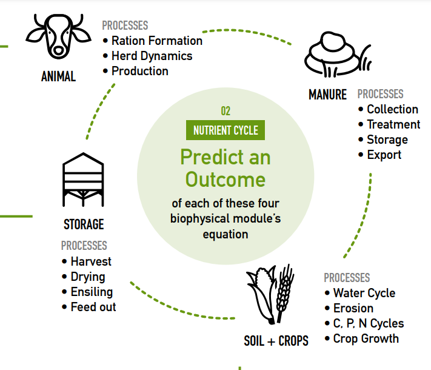
This image summarizes the processes and outputs of the four modules of the RuFaS Model
{kind=link}
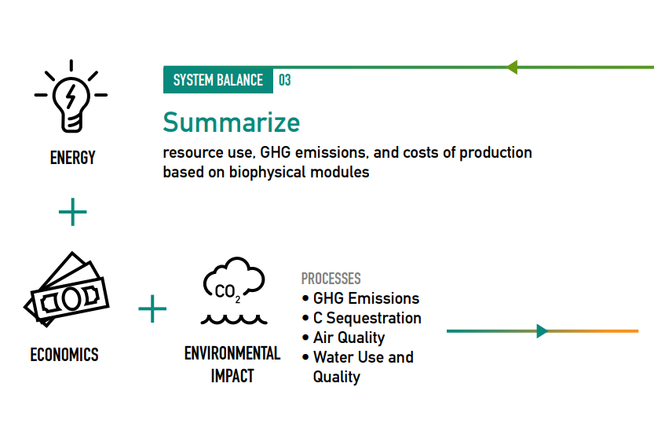
If you are interested in reading more about any of the modules or the science and formulas behind the curtain, please take some time to review our Scientific Documentation Manual available in This is XXXXXXXXXXX.
Downloading the Software#
The purpose of this section is to guide you, the user, in downloading the tools needed to work with RuFaS. You will be downloading:
Git - Git is a version control system that helps you track changes in your code over time. It lets multiple people collaborate on a project without overwriting each other’s work. We need this so that VS Code can better communicate with RuFaS through VS Code (or another IDE). This is not to be confused with our online GitHub repository or the GitHub Desktop Application, but more details about these are available in section 3.1.
Python - If you are not familiar with Python, you may be familiar with other programming languages like ’R’ or ’SAS.’ Similarly, Python is attractive for Rapid Application Development and scripting due to it’s high-level built in data structures and dynamic typing and binding. The Python Software Foundation describes that ’programmers fall in love with Python because of the increased productivity it provides. Since there is no compilation step, the edit-test-debug cycle is incredibly fast. Debugging Python programs is easy… and will never cause a … fault.’
Visual Studio Code (VS Code) - This is a type of Integrated Development Environment or IDE. Typically, IDE’s present a single program in which all development is done. These programs create a ’one stop shop’ for authoring, modifying, compiling, deploying and debugging software. At it’s most basic, an IDE consists of at least a source-code editor, build automation tools, and a debugger. There are many to choose from, but our RuFaS team primarily works in VS Code. *NOTE: If you are familiar with IDE’s and how to use them, you may download PyCharm or another IDE of your choice.
Desktop Git v. IDE: What’s the point?
GitHub Desktop, is a graphical user interface (GUI) application that helps you manage your Git repositories without using command-line Git commands. A repository is a central location where data is stored. The online or remote repository on the GitHub website is where the skeleton of RuFaS resides and allows the team to collaborate and sync changes so that they may be available to everyone. This synced, remote repository can be cloned, or copied, and downloaded to allow one to modify and work with RuFaS without changing the entirety of the program. This way, you have control of if and when you ’commit’ your changes so that they are synced with the remote repository and visible to all members of the team. In summary, Git Desktop:
Allows you to clone, commit, push, pull, and merge repositories with a simple UI.
Provides a visual representation of your branches, commits, and changes.
Helps you resolve merge conflicts in an intuitive way.
Good for beginners or those who prefer not to use Git commands in the terminal.
IDE’s like VS Code can be powerful code editors that also integrate Git functionalities seamlessly. These are helpful to achieve the tasks we need for RuFaS, but more specifically help us maintain version control while collaborating.
Allow you to write, edit, and debug your code in multiple languages.
Have built-in Git integration, allowing you to commit, push, pull, and merge directly from the editor.
Support extensions, including those for GitHub (this makes them very customizable)
Has an integrated terminal where you can run Git commands manually if needed.
The following sections will describe the steps of installation in more detail. Let’s get started!
Install Git#
The purpose of installing Git Desktop is to allow you to work and make changes without impacting the remote repository. You will be downloading the Git Desktop software and then will need make a copy of the online repository for your offline repository.
Visit the official Git website, select the device that is most appropriate and then select “Download”.
Follow the setup wizard to install git. (Keep hitting next)
Verify the installation by:
Open Command Prompt for Windows, Terminal for macOS.
Enter the following command:
git --versionA message indicating the git version should be printed out on your screen:
git version 2.40.0.windows.
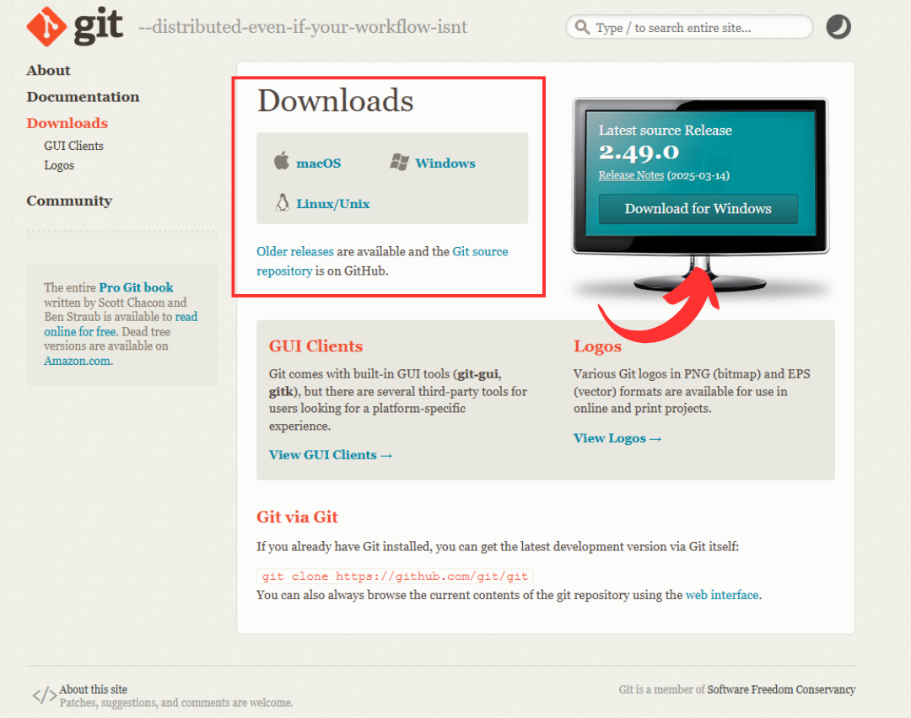
Cloning and Repository Set Up To set up RuFaS, we first must clone the GitHub repository. Recall that this creates a working copy of all the files and the entire version history of that repository on your computer, allowing you to work with the code offline and make changes that can later be pushed back to the online repository.
A step by step guide on how to do this is available at GitHub.
Install Python#
If you don’t already have Python 3.12 or 3.13 installed, download the latest version from the official Python website. To check that you have the correct version of Python installed, follow the steps provided for Windows or MacOS depending on the device you are working with.
Windows
Download the latest Python installer from the official Python website.
Follow the setup wizard to install Python. (Keep hitting next)
Verify the installation by:
Go to Start and enter cmd in the search bar. Click Command Prompt.
To ensure that you are working in the correct version of Python, enter the following command in the command prompt:
python --versionor
python -vA message indicating the Python version should be printed out on your screen: “Python”
Detailed tutorial by DigitalOcean.
MacOS
Download the latest Python installer from the official Python website.
Follow the setup wizard to install Python. (Keep hitting next)
Verify the installation by:
Open the Terminal.
To ensure that you are working in the correct version of Python, enter the following command in the command prompt:
python3 --versionor
python3 -vA message indicating the Python version should be printed out on your screen: Python 3.11.4
Detailed tutorial by tutorial by DataQuest
Install VS Code (the IDE)#
Recall that this IDE will allow us to write, edit, debug, and pilot test RuFaS. VS Code is commonly used by RuFaS team members, but there are other options of IDEs if you wish to explore other ways to work with the RuFaS program. If you are not familiar with IDEs, we recommend sticking with VS Code so a RuFaS team member can be of maximal assistance troubleshooting.
Begin by visiting the official VisualStudio website.
Follow the setup wizard to install VS Code.
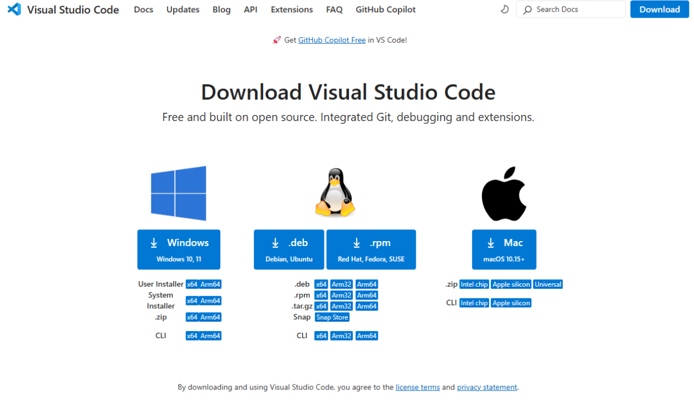
Set Up Virtual Environment A virtual environment is a self-contained directory that isolates Python packages and their dependencies for a specific project, ensuring compatibility and preventing conflicts with other projects.
They allow you to manage different versions of Python packages and their dependencies for various projects without conflicts. When you create a virtual environment, a new directory is created, containing a copy of the Python interpreter and package installation directories.
Open VS Code and locate the terminal at the bottom of the window.
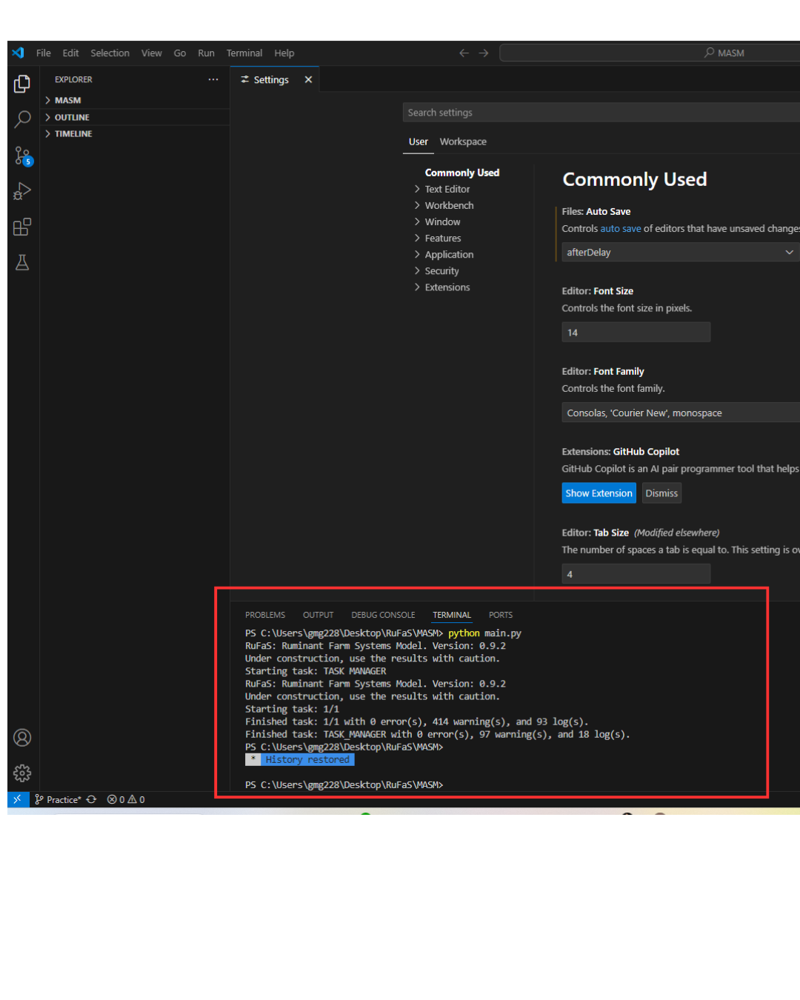
If it is not immediately apparent, go to the menu at the top of the window and create a “New Terminal”
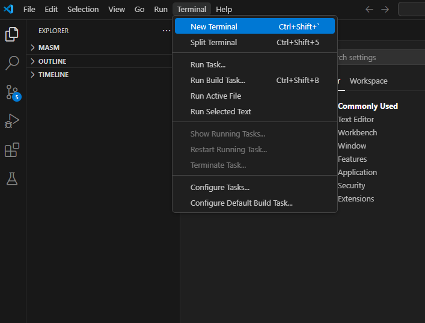
You’ll need to have at least the minimum supported versions of each dependency installed to run RuFaS.
To ensure your dependencies are up to date, you’ll just need to run:
pip install .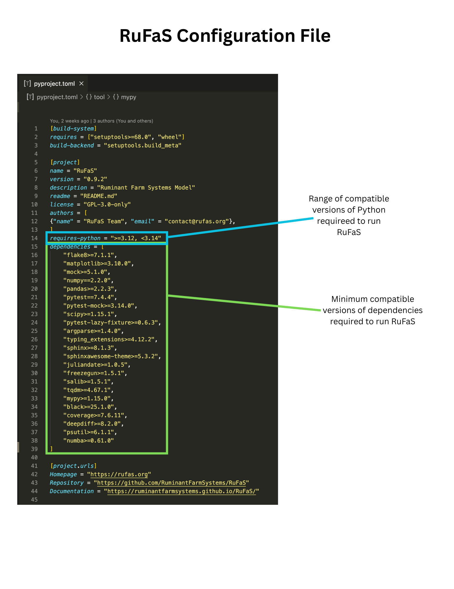
Great job! If you’re reading this, you’ve reached the end of this section and have downloaded all of the programs you need to get started. This is a great time to take a pause. Let’s review. Before continuing, you should have already:
Git,
VS Code (and set up your virtual environment), and
Python v. 3.12 or 3.13.
If you have completed all of those steps, let’s learn a little bit about the program and some basic principles to make running RuFaS a little more straighforward.
Beginner’s Guide to RuFaS: Basic Principles and Practice#
If you have experience working in collaborative software development projects and using these tools, you may want to skip this section. If this is all new to you (or you are unsure of how all of those steps in the previous section have gotten you any closer to running RuFaS), we recommend you review this Beginner’s Guide before getting started. After using this section, you should feel more comfortable with the general principles of working within your Git, VS Code, and how Python fits into it all so that you may more effectively run some basic tasks through RuFaS.
Remember, that this section is not an exhaustive description of all the inner workings of RuFaS and its capabilities. There are a lot of different ways to work with RuFaS. Some approaches may be better than others (especially for you personally), but none are “bad” per se. While we have a lot of options, there are also some best practices that keep us organized and make tracking our progress easier! To do anything with RuFaS, we needed to download Git and Python in addition to our VS Code. Now that your repositories have been copied and your IDE is able to understand your code language, we will focus on working with RuFaS primarily through VS Code.
If you wish to have more information on how to interact with RuFaS through other IDE’s or using Git or GitHub Desktop, please reach out to a RuFaS team member for more information.
In this section, you will review:
Basic Vocabulary Used by Developers
Common Ways to Engage with RuFaS
Basic Principles of RuFaS Structure
Beginner’s Simulation Worksheet
After this section, if you have any remaining questions, be sure to reach out to a RuFaS team member for more assistance.
Basic Vocabulary Used by Developers: Learning to Communicate with RuFaS#
To work successfully in interdisciplinary environments like RuFaS we have to learn a new language. You don’t need to be fluent, but here are a few terms and phrases that make working with RuFaS easier (regardless of your role on the team).
Branch – A separate version of a project in Git, allowing developers to work on new features or fixes without affecting the main project until changes are finalized.
Commit Change – Saving changes to a project’s version history in Git. A commit acts like a checkpoint, capturing the state of the code at that moment.
Config File – A file that stores customizable settings for a program, allowing users to adjust parameters without modifying the code itself.
Git -Git is a version control system — a tool you install on your computer that tracks changes to files (especially code) over time.
GitHub Desktop -is a Graphical User Interface (GUI) application that allows you to interact with Git and GitHub without using the command line. It simplifies tasks like cloning repositories, creating branches, making commits, and submitting pull requests by providing buttons and visual tools. It’s especially helpful for beginners or those who prefer a visual workflow over typing commands in a terminal.
GitHub Online Repository -is a cloud-based storage location on GitHub.com where your code, files, and version history are saved and shared. It allows collaboration with others, tracks changes over time, and supports features like issues, pull requests, and project boards. It’s the central place where your team can work together and manage your codebase from anywhere.
GUI (Graphical User Interface) – A visual interface that allows users to interact with software through buttons, icons, and menus instead of text-based commands.
Input – Any data, parameters, or settings provided to a program or simulation to control how it runs.
JSON File (JavaScript Object Notation) – A lightweight data format that stores structured information as key-value pairs, similar to a dictionary, making it easy to read and exchange between systems.
Linting – The process of analyzing code for errors, formatting issues, and best practices, improving readability and maintainability.
Log – A record of system events, errors, and performance details, helping users and developers troubleshoot and monitor simulations or applications.
Metadata – Data about data, providing context such as file descriptions, timestamps, or author information.
Nodes – In software development, nodes often refer to individual points in a system or network, such as components in a graph, data structure, or simulation model.
Output – The results or data generated by a program or simulation based on its input and processing.
Output Filter – A tool that selects and refines simulation results, helping users focus on specific data points of interest. These filters can be created, modified, saved, or shared.
Pull Request (PR) – (See “Submit Pull Request”) A Git workflow process where changes from a branch are proposed for review before being merged into the main codebase.
Push Branch – The process of uploading a local branch to a remote repository, making it accessible to others.
Repository – A central location where all files, version history, and changes of a project are stored and managed, typically using Git.
Simulation – A computer-based model that mimics real-world processes to predict outcomes under different conditions. Used for testing, research, and problem-solving.
Submit Pull Request (PR) – A request to merge changes from one branch into another, typically for review and approval before final integration.
Terminal – A text-based interface used to interact with a computer system, run commands, execute programs, and manage files.
Virtual Environment – A self-contained workspace that isolates Python packages and dependencies for a project, preventing conflicts with other projects.
Basic Principles of RuFaS Structure: What is RuFaS Doing?#
Everyone has their own workflow and style when running RuFaS. We are going to do a walk through of just one way to run the program, but you may begin to develop your own method as you become more familiar with the program and the platforms you’re working in.
Remember that your Git desktop repository is not the same as the remote online GitHub repository and should be updated. If you are not a developer, it is recommended that you do most of your work through the Git Desktop.
Test Default Settings of RuFaS
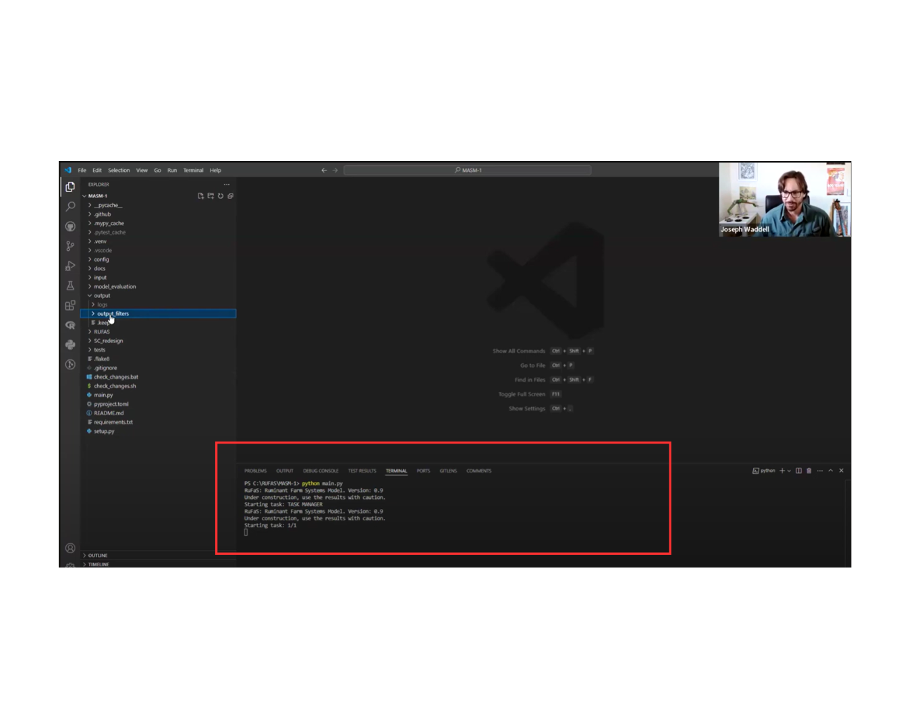
Your terminal will appear at the bottom of your VS Code screen.#
Locate your terminal in the IDE you have chosen to download (PyCharm or VS Code).
Run a example scenario by typing in “python main.py”. Did you get a message with the RuFaS version number and saying it was starting a task? Congratulations! You just simulated the RuFaS example farm!
You can find the details related to logs, warnings, and errors under “output” then “logs” (found in the left-hand menu in VS Studio). Many of the errors can be ignored, but if you are concerned about the number or severity, contact a Dev team member for more details.
For more details about how to set up your virtual environment and run simulations, check out this training video.
Checkout a new branch
Using Git Desktop - At the top of your screen, click on the “Current Branch” tab and search for the branch that you want to work in. For example, “Animal Refresh 09”.
Click on that branch to check it out
Run the example farm scenario again to check if you were successful
Familiarize yourself with the RuFaS file structure. Using VS Code - All of the folders and files that make up the RuFaS model are visible on the left-hand side of VS Code when you click the top icon called “Explorer”. The three that you should be more familiar with are:
Input - this contains all of json, config files and metadata that informs the program.
Default Config Files Unless you manually adjust them, your simulation will always refer to the example configuration file to run. This example config file is used to configure a “scenario.” You can open these files and change the parameters with which you are working.
For example, if you are specifically concerned with animal parameters, consider things like size of herd, average size of the animal, length of lactation, etc. You can adjust these parameters to fit the simulation that you are running.
*Note, some data is reported in your outputs on a ’daily’ basis (in quotes because the day we are referring to is in the simulation). You can adjust the length of time of the simulation to report these outputs in your config files by adjusting the start and end dates. The example is 6 years. The Output section of this introduction will go into more detail.
Metadata - One RuFaS team member once succinctly described this as your RuFaS address book. When you decide to run a meta-data scenario, this file will indicate the exact path that the program takes to find the correct ’config’ file.
Make sure that you have the correct “address” indicated in your metadata file for the simulation that you are running.
If you aren’t sure, go back to your input data folders, select your module of interest and the file you wish to use. This is your “address”. You may also see the term “multi-run-counts” followed by a numeral. This indicates that the simulation will run the number indicated in the numeral. You can replace this number if you wish to run fewer or more simulations through the same metadata file.
Tasks - under your ’inputs’ and ’data’, there is a ’tasks’ file. Select one of the available tasks. You will see that the code describes where the data are coming from. Unless you change the file yourself, the simulation will automatically select a example file. You can change the source by simply typing an alternate file name.
Output - contains “output filters,” the actual output of your simulation, and some different folders that indicate the type of output report you have generated (e.g. csv, reports, or graphs). Your outputs will look different depending on what output filters you have active.
Output filters are key to directing the program to deliver your outputs of interest. When you create a filter, it starts with “csv” and then the name of the rest of the file. All that goes into this file is the name of the output you want. They can be quite user specific, so it might be helpful to start with asking other model users to share some basic filters.
Recall from the input section that some data are reported on a ’daily’ basis. You can set up csv files print a column with each simulation ’day’ occuring in the model.
For example, if you are interested in the number of calves, the csv will report a column with different numbers of calves reported for each ’day’.
*Note, when you run a simulation, there will also be logs to tell you more detailed information about the simulation you ran. Some of these logs may be helpful, but may sometimes be difficult to interpret. Don’t hesitate to reach out to the RuFaS user community to help you interpret logs.
RuFaS - as the name may imply, this is the home for the code that makes up the program. There are folders like “routines”, “animal” and more. Each of these folders open to far more detailed aspects of each module. As you select through these files, you will see what is running on a ’daily’ basis in each simulation.
main.py is the pointer to everything.
\(>\) task manager
\(>\) simulation engine
\(>\) submodules in RuFaS
We hope that this section has made you feel a little more familiar with the structure of RuFaS. Now let’s practice running a simulation.
Beginner’s Simulation Worksheet: Practice Making Simple Changes#
Once everything has been installed and tested, let’s take a minute to run a quick simulation. We will adjust one or two inputs and then check our outputs to ensure what we have done makes sense. Before we begin, open your Git Desktop and VS Code.
Navigate to your VS Code window. Checkout what branch you are working in by looking at the bottom left of your screen. You may also create a new branch to work in if you wish.
Now we will locate the files needed to run a simulation. We will work our way through the various file paths to understand how RuFaS ’knows’ what inputs to use.
In the menu to the left select the input dropdown and then select metadata dropdown.
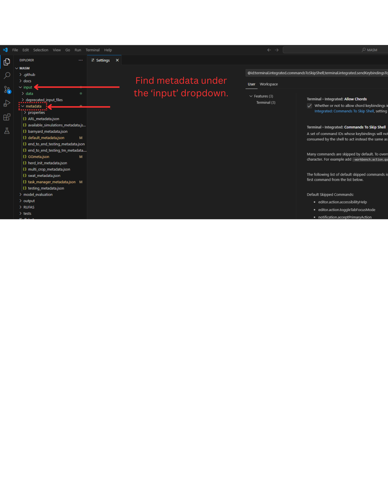
The VS Code window has a menu on the left side of the screen where you will spend the most time navigating between dropdowns to find the files you need to change and your outcomes. You will become familiar with the following: input, output, data, metadata, output filters, and reports#
Select the file titled task_manager_metadata.json and observe the “path” to find the example_freestall_task.json file.
The path demonstrates how you may find the file from which RuFaS is receiving instruction or inputs. If no changes are made, RuFaS will always run through the indicated example files.
Go to the left menu of VS Code again and you may locate the file by selecting input then data, and finally tasks.
There you will find example_freestall_task.json.
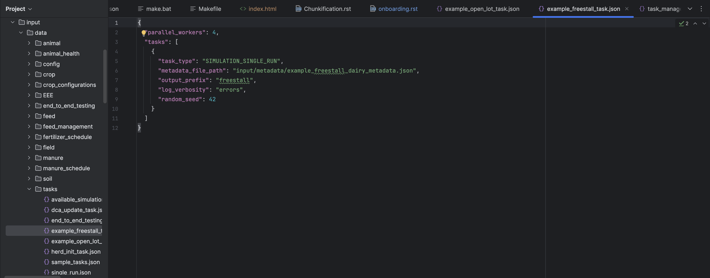
This figure demonstrates where you may find the task_manager_metadata.json file and the location of the path for the next default task.#
When you select the file, example_freestall_task.json you will notice there is another path pointing to a example_freestall_dairy_metadata.json file. This example_freestall_dairy_metadata.json file is your first opportunity to make adjustments to tailor the simulation to your needs. Following the path, navigate to the metadata json file.
In the example_freestall_dairy_metadata.json file, you will observe a long list of paths to different input or config files. These are where you will be making your changes to inputs (i.e. animal numbers, manure storage system, etcetera).
***Tip: If you will be making changes to multiple aspects of animal module, feed storage, crop and soil, and/or manure files, we recommend that you make a copy of example_metadata.json (you may right click the file and copy it to the same location or use CTRL+C then CTRL+V).
If you chose to make a copy, title it something easy to remember. We recommend “example_metadatav1.json” or something similar.
Using the paths in either the example_freestall_dairy_metadata.json file or the version of the file that you created, locate the values that you wish to alter for your simulation.
For practice, navigate to the portion of text titled “Animal data” in the file. Follow this path to the example_freestall_animal.json file in the metadata dropdown.
Create a copy of example_freestall_animal.json and give it the title “example_freestall_animal1.json”
In your newly created json file, change the “cow_num” from 100 to 10000 and your “replace_num” from 500 to 3000.
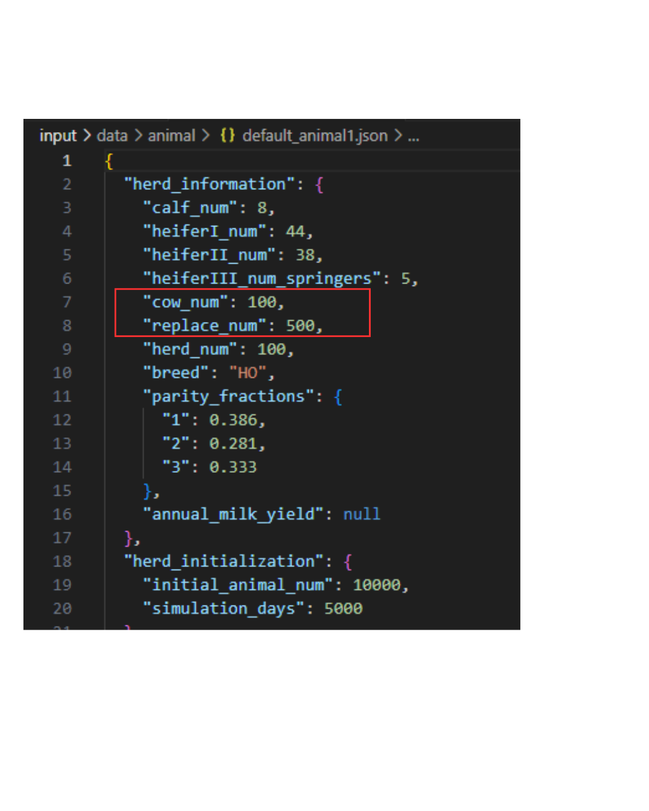
Now we need to make sure that all of the paths that we just walked through are pointing to the correct files so that we can run our first simulation. Methodically work your way backwards through the steps to check that the paths are pointing to your newly created file or files if you made a copy of the example_freestall_dairy_metadata file.
Check your example_freestall_dairy_metadata.json file or the copy that you created. The path for the “animal data” should point to the new example_freestall_animal1.json file that you created in Step 6.
Check that your example_freestall_task.json file is indicating the correct metadata json file if you did create a copy of the file. If you did not, it should already be pointing to the correctly example_freestall_dairy_metadata.json file.
You may wish to check on the example_freestall_task.json and task_manager_metadata.json, but we did not make any changes past this point so all files should still be correctly indicated in the path.
Let’s run it! Navigate back to the terminal at the bottom of your VS Code and type in the instruction “python main.py” and then hit “Enter” on your keyboard.
It may take a little while to run. You can always check under output and logs to see the status and any errors that may arise. Most errors can be ignored, however feel free to reach out the dev team if you have any questions.
When the simulation is complete, you can find the results in output dropdown on the menu of VS Code. If you want to view the results in your file location, right-click on the name of the file and select “Reveal in File Explorer.” This will open the file in your computer to the location of the results. Remember, results are reported one of 3 ways:
CSV files (standard)
Reports (see Step 11 on how to generate Reports)
Graphs (see Step 11 on how to generate Graphs)
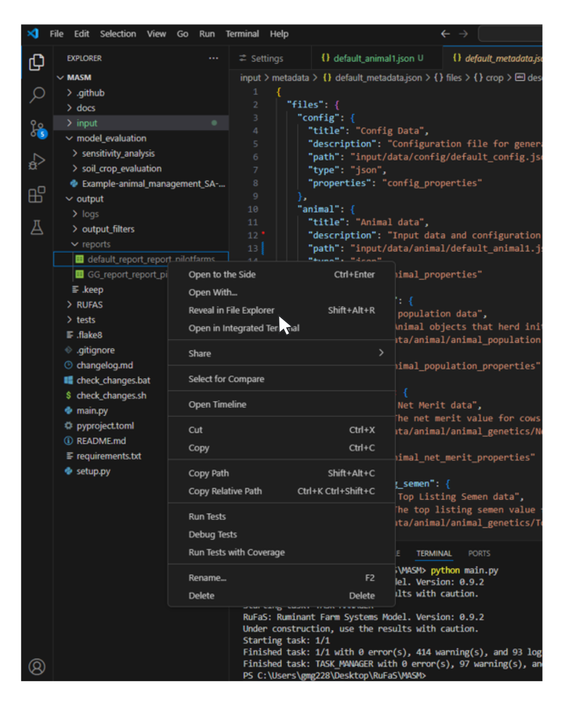
You may have noticed that your output includes ALL possible variables and outputs by the model. This is because we haven’t set up any Output Filters to control what results you will view and how they are reported.
You can borrow the files for Output Filters from other team members or create some on your own. For more details on how to create your own, visit the GitHub wiki Output Manager.
Think of output filters as an opportunity to tailor the results generated from your simulation to only show the variables of interest. You can also use filters to control the way you view your results. Recall Step 9, while CSV files are standard for RuFaS, Reports and Graphs must be generated using filters.
The Output Manager also has some sample filters that you can use and add into your VS Code to help you.
Output filters may be ’turned on’ and ’turned off’ by simply using “_.” In the image to the right, there are 2 versions of the same filter. The one highlighted RED will be bypassed because the “_” indicates it is ’off.’ The one in GREEN will be used to generate a report.
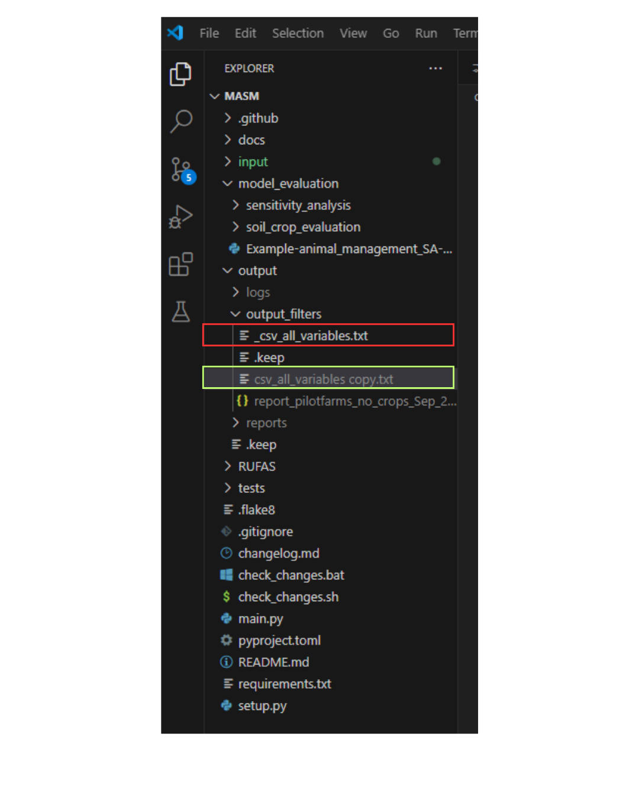
{kind=link}
{kind=link}
{kind=link}
Additional Materials#
Now that you’re familiar with the basics, we encourage you to review the full recording of the onboarding session for more details.
If using VS Code or PyCharm and unsure of how to proceed with setting up the virtual environment (or if you have any other questions or concerns), please reach out to the RuFaS team for support.
If you are going to be creating or running a lot of code, we recommend you review Uncle Bob’s clean code philosophy videos. Take your time and review all 6 videos in the series.